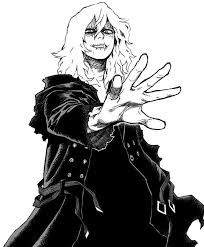

Tomura Shigaraki, cuyo nombre real es Tenko Shimura, es el líder de la Liga de Villanos y el principal antagonista después de la derrota de All For One. Su personaje es un estudio del trauma, la manipulación y la búsqueda de un propósito. De un niño abandonado por una sociedad de héroes que lo ignoró, se convierte en un símbolo del colapso social, destinado a heredar el poder de All For One y destruir todo lo que lo hirió en el pasado.
Historia y Origen
Tomura Shigaraki nació como **Tenko Shimura**, nieto de la séptima portadora de One For All. Su infancia fue una tragedia silenciosa. Creció bajo el estricto control de su padre, quien lo odiaba debido a su propia historia de trauma con los héroes. Un día, su quirk, el **Deterioro**, se manifestó de manera incontrolable, causando la muerte accidental de toda su familia. Este evento traumático fue ignorado por los héroes, lo que lo dejó solo y resentido en las calles.
All For One lo encontró en este estado de vulnerabilidad y lo adoptó, alimentando su odio hacia la sociedad de héroes. Le dio un nuevo nombre, **Tomura Shigaraki**, y un objetivo: destruir el sistema que lo había fallado. Se convirtió en la marioneta de All For One, el vehículo perfecto para perpetuar su legado de maldad.
El Quirk: Deterioro (Decay)
El quirk original de Shigaraki, Deterioro, le permite desintegrar todo lo que toca con sus cinco dedos simultáneamente. Inicialmente, era un poder difícil de controlar que se manifestaba de forma esporádica durante su infancia. Tras el entrenamiento y el despertar de su quirk, su poder se volvió exponencialmente más devastador.
Evolución y Despertar del Quirk:
- Forma Original: Al tocar un objeto con sus cinco dedos, este se desintegra en segundos. La desintegración se propaga rápidamente, convirtiendo edificios y personas en polvo.
- Despertar: Tras su batalla con Gigantomachia y la pérdida de la Liga de Villanos en la batalla con Overhaul, Shigaraki despierta completamente su quirk. Ahora puede desintegrar todo lo que se conecta a su objetivo, ya sea a través de la tierra, el aire o cualquier superficie. Un simple toque puede propagarse por toda una ciudad.
- Quirk de All For One: Eventualmente, Shigaraki hereda el quirk de All For One, obteniendo la capacidad de robar y utilizar múltiples quirks. Esta combinación lo convierte en una amenaza sin precedentes, fusionando el poder destructivo del Deterioro con la versatilidad de All For One.
Relaciones y Vínculos
Las relaciones de Shigaraki son complejas, basadas en la soledad y la manipulación:
- All For One: Su figura paterna y mentor. All For One no solo lo salvó de la calle, sino que también lo moldeó y lo adoctrinó, convirtiéndolo en un villano. A pesar de la manipulación, Shigaraki lo ve como el único que se preocupó por él.
- La Liga de Villanos: Aunque al principio los veía como simples herramientas, Shigaraki eventualmente desarrolla un lazo genuino con miembros como Dabi y Toga, viéndolos como una familia. Esta conexión lo motiva a luchar por sus ideales y no solo por la destrucción.
- Izuku Midoriya: Su némesis, el portador de One For All. Shigaraki y Midoriya son el reflejo el uno del otro: ambos heredaron un gran poder y un gran legado. Su rivalidad no es solo física, sino ideológica, ya que ambos luchan por moldear el futuro de la sociedad.
- Kurogiri: Actúa como su niñera y figura de apoyo, cuidándolo y guiándolo bajo las instrucciones de All For One.
- Gigantomachia: Una relación de prueba de lealtad. Shigaraki tuvo que enfrentarse a Gigantomachia durante meses para demostrar que era digno de heredar la voluntad de All For One.
"Si el mundo no va a reconocer mi dolor, entonces destruiré este mundo y crearé el mío propio."
Momentos Importantes Desarrollados
- Ataque a la USJ: Su primera gran aparición como líder de la Liga de Villanos. Aunque el plan falló, este evento lo estableció como una amenaza real y mostró su inestabilidad emocional.
- Enfrentamiento con Overhaul: Una batalla crucial que define a Shigaraki como líder. Después de ser humillado y de perder miembros de su Liga, Shigaraki se fortalece, matando a Overhaul y recuperando el liderazgo del submundo criminal.
- Despertar del Quirk: Durante su batalla contra un ejército de Meta Liberation Army, el quirk de Shigaraki finalmente despierta, extendiendo su poder de desintegración a una escala masiva y convirtiéndolo en una fuerza de destrucción imparable.
- La Batalla Final: El clímax de la serie, donde Shigaraki se enfrenta a los héroes. En esta batalla, fusiona su conciencia con la de All For One y utiliza el poder combinado para desafiar a toda la sociedad.
Final del Personaje
El final de Tomura Shigaraki es la culminación de su trágica historia. En la batalla final, se convierte en un ser de puro caos y destrucción, una manifestación de la voluntad de All For One y de su propio dolor. Sin embargo, gracias a los esfuerzos de Izuku Midoriya y la intervención de las conciencias de sus familiares que habitan en la memoria de One For All, Shigaraki tiene un momento de redención.
En sus últimos momentos, Shigaraki elige no la destrucción total, sino salvar lo que queda de su propia humanidad. Su cuerpo y su conciencia, ahora libres de la influencia de All For One, se desvanecen en la nada. Este acto final no lo redime por todos sus crímenes, pero sí le permite encontrar la paz, liberándose del dolor que lo consumió durante toda su vida. Su muerte representa el fin de la era de All For One y el inicio de una nueva etapa para la sociedad de héroes.